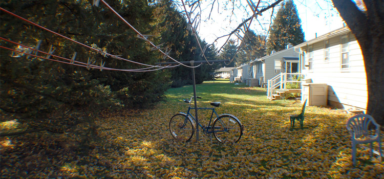

Sliding Doors A Horizontal Accordian
- 
Introduction
I created this plugin out of necessity. Every accordian plugin I tried in the past was too pushy. It had limited customization with far too much built in CSS, themes, etc. So this is a super light weight horizontal accordian. The customization is up to you. The plugin comes with zero lines of accompanying CSS for you to deal with. If you want to make it look less plain, go for it, but far be it from me to assume you want some wieird theme.
What it does
The plugin looks for an unordered list and then creates a horizontal accordian from the list items. From there it looks for some options that determine the size and display of your accordian.
The Code
You MUST declare the size of your accordian. There are 2 ways to do this. One is to declare the width of a closed panel, the width of and open panel and the height. The other way is to declare the width of and open panel, the width for the whole panel set and the height. Then let the plugin figure out the rest. Examples of both follow.
Plugin with width of open panel, closed panels and height declared
1 2 3 4 5 6 7 |
$(document).ready(function(){
$("#panels").slidingDoors({
widthClosed: 30,
widthOpen: 500,
height: 350
});
});
|
Plugin with open panel, total width and height declared
1 2 3 4 5 6 7 |
$(document).ready(function(){
$("#panels").slidingDoors({
widthOpen: 500,
fitToWidth: 900,
height: 350
});
});
|
Advanced Usage
The plugin provides several options that allow you to gain more control. There are also events available to you so you can pile on effects. Below is the plugin with all the non-required options. This is also the code that is running the sliding doors example at the top of the page.
1 2 3 4 5 6 7 8 9 10 12 13 14 15 16 17 18 19 20 21 22 23 24 25 26 27 28 29 31 31 |
$(document).ready(function(){
$("#panels").slidingDoors({
widthOpen: 750,
fitToWidth: 960,
height: 350,
firstPanel: 4,
activationMethod: 'hover',
easingMethod: 'swing',
easingLength: 600,
panelFocus: function() {
console.log('Focused: ' + $(' img', this).prop('alt'));
},
panelBlur: function() {
console.log('Blurred: ' + $(' img', this).prop('alt'));
},
perIterationInactive: function() {
$(' img', this).stop().animate({ opacity: .5});
},
perIterationActive: function() {
$(' img', this).stop().animate({ opacity: 1});
},
onLoaded: function(returnObject) {
$(returnObject.doors).each(function(index, element){
if(returnObject.intialSlideIndex != index){
$(' img', element).css('opacity', .5);
}
});
}
});
});
|
Default Options
-
- Option Name
- Default Value
- Data Type
- Possible Values/Further Explanation
-
- activationMethod
- 'hover'
- Type: String
- Use either 'hover' or 'click'
-
- easingLength
- jQuery Default
- Type: Int
- Any unsigned integer (measured in milliseconds)
-
- easingMethod
- 'linear'
- Type: String
- Any jQuery easing method
-
- firstPanel
- 0
- Type: Int
- This is based on a zero index
-
- height
- 0
- Type: Int
- Any unsigned integer
-
- panelBlur
- function() {}
- Type: Function
- This function works together when you are using 'hover' as the trigger method. It fires when you mouse off of a panel. This does not fire when 'click' is the activation method
- panelBlur
-
- panelFocus
- function() {}
- Type: Function
- This function fires when a panel is activated either through hover or click (depending on activationMethod plugin option)
- panelFocus
-
- perIterationActive
- function() {}
- Type: Function
- This returns the active panel
-
- perIterationInactive
- function() {}
- Type: Function
- This returns the list of panels that are not open
-
- onLoaded
- function() {}
- Type: Function
- Returns an array of objects about the panels after the plugin has loaded. Note that some of these values may differ from declared values due to invalid data.
Object {
doorsWidth
numOfPanels
container
doors
closedWidth
intialSlideIndex
openWidth
}
WARNING: If you have multiple unordered lists with the same plugin instantiation, the objects returned can cause unexpected behavior. It is recommended to use multiple plugin instantiations if you encounter problems.
-
- widthClosed
- 0
- Type: Int
- Any unsigned integer
-
- widthOpen
- 0
- Type: Int
- Any unsigned integer